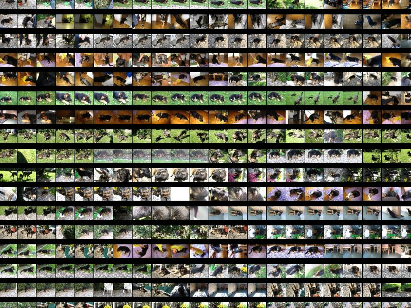
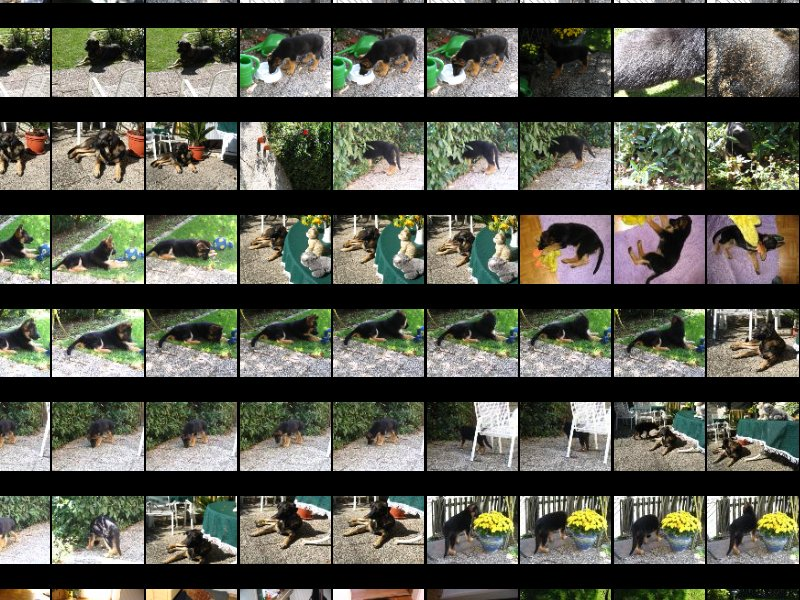

Galapix
 Galapix is a simple zoomable image viewer or browser (ZUI) that allows you to directly zoom into large collection of tens of thousand of images from tiny thumbnails down to the images original size, modelessly and fluently with short load times and no loss of interactivity. It accomplishes this by keeping a tile cache which stores not only thumbnails for one size, but thumbnails of many different sizes. It can also be used to view gigapixel scale images.
Galapix is a simple zoomable image viewer or browser (ZUI) that allows you to directly zoom into large collection of tens of thousand of images from tiny thumbnails down to the images original size, modelessly and fluently with short load times and no loss of interactivity. It accomplishes this by keeping a tile cache which stores not only thumbnails for one size, but thumbnails of many different sizes. It can also be used to view gigapixel scale images.
 
Videos
Running
galapix comes with a number of sub commands, allowing the user to either view images or pre generate thumbnails. The most basic command is:
./galapix view [FILES]...
Which display the given files. To pregenerate only the small thumbnails you use:
./galapix thumbgen [FILES]...
To generate not only the small thumbnails, but all tiles you use:
./galapix prepare [FILES]...
The other available commands are mostly for debugging and have little actualy use.
When you do not supply a list of files galapix will display all files in the database.
Via the -d flag you can specifiy a database, so that you can have different databases for different files.
Keyboard Commands
| F11 |
toggle fullscreen |
| t |
toggle trackball mode |
| 1 |
layout images 4:3 |
| 2 |
layout images 16:9 |
| g |
toggle grid |
| Page Up |
increase gamma |
| Page Down |
increase gamma |
| space |
print the currently visible images to stdout |
Space Navigator Support
galapix supports the Space Navigator via the Open Source spacenavd daemon:
- http://spacenav.sourceforge.net
The 3Dconnexion's official 3dxsrv daemon is not supported, neither is directly reading from /dev/input/eventX.
Links